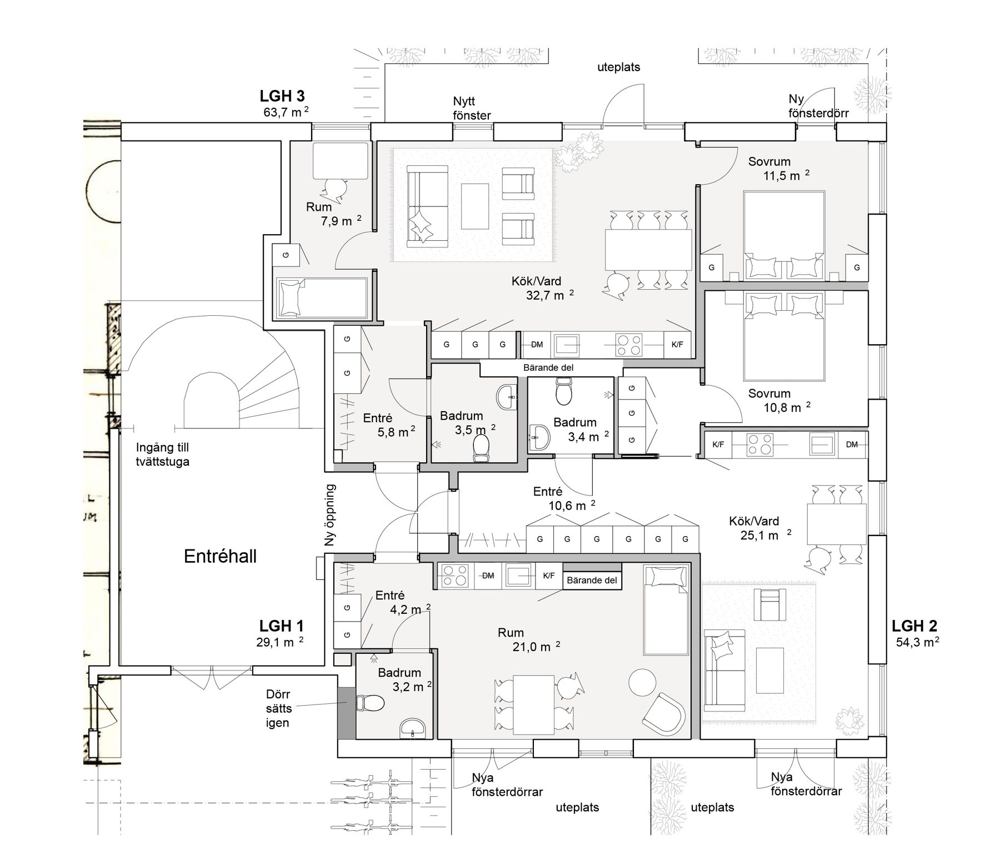

Ombyggnader
01
För platsen. För människorna. För livet.
Genomtänkt arkitektur för det som
är, och det som kan bli.
Det börjar med att lyssna. På dina behov, på platsen och på det som redan finns.
Sjödin Arkitektur arbetar med bostäder, ombyggnader och nya miljöer. Från den första skissen till genomarbetade handlingar, med omsorg om ljuset, materialen och vardagen som ska rymmas där.
Möt Susanna och studionHur kan ett hus utvecklas utan att förlora sin karaktär? Vad gör en planlösning bättre att leva i? Vi utforskar möjligheterna tillsammans, innan besluten tar form.
Så arbetar vi
En tydlig arkitektkontakt genom projektet. Vi anpassar uppdraget efter vad du behöver hjälp med.
Villa, fritidshus, ombyggnad eller ett nytt rum för livet.
02Utveckla det befintliga med funktion och långsiktighet.
03En självständig arkitekt eller en del av ert projektteam.
 Susanna Sjödin / Arkitekt SAR/MSA
Susanna Sjödin / Arkitekt SAR/MSAJag heter Susanna Sjödin och driver Sjödin Arkitektur sedan 2011. För mig hör gestaltning, funktion och förståelse för det befintliga ihop.
Med erfarenhet av både nybyggnad och ombyggnad hjälper jag dig att se möjligheterna – och att göra dem till ett projekt som går att arbeta vidare med.
Läs mer om migSusanna SjödinSusanna kompletterade våra egna idéer med många fina detaljer.
Susanne beskriver ett samarbete över flera renoveringar, med stöd i både gestaltning och byggtekniska frågor.
Louise lyfter samspelet med den befintliga miljön och ett hus som fungerar för familjens vardag.
Ett nytt hem, fler möjligheter i ett befintligt hus eller nästa steg för en fastighet. Berätta om dina tankar.
Prata med Susanna